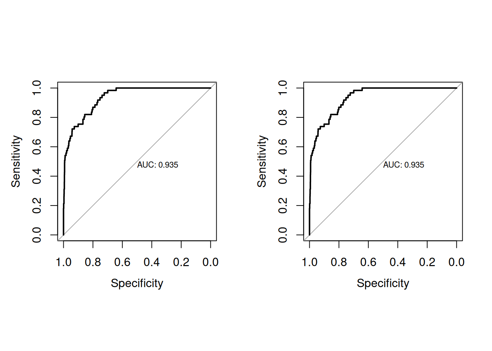

#Necessary packages for this homework
library(ISLR2)
library(tidyverse)
library(tidymodels)
library(MASS)
library(e1071)
library(pROC)
library(ggcorrplot)
library(patchwork)
library(boot)Homework 1 - IND2627
1 Exercise 1
1.1 Brief Exploratory Data Analysis
The Boston Dataset is a dataset derived from information collected by the U.S Census Service concerning housing in the area of Boston Massachusetts. It is composed by 506 observations of 14 variables, without any missing values. These variables are:
- CRIM - per capita crime rate by town
- ZN - proportion of residential land zoned for lots over 25,000 sq.ft.
- INDUS - proportion of non-retail business acres per town.
- CHAS - Charles River dummy variable (1 if tract bounds river; 0 otherwise)
- NOX - nitric oxides concentration (parts per 10 million)
- RM - average number of rooms per dwelling
- AGE - proportion of owner-occupied units built prior to 1940
- DIS - weighted distances to five Boston employment centres
- RAD - index of accessibility to radial highways
- TAX - full-value property-tax rate per $10,000
- PTRATIO - pupil-teacher ratio by town
- B - \(1000(Bk - 0.63)^2\) where Bk is the proportion of blacks by town
- LSTAT - % lower status of the population
- MEDV - Median value of owner-occupied homes in $1000’s
The Table 1 displays the first five observations from the dataset, while Table 2 presents its descriptive statistics. Additionally, Figure 1 visualizes the correlations between variables.
| crim | zn | indus | chas | nox | rm | age | dis | rad | tax | ptratio | black | lstat | medv |
|---|---|---|---|---|---|---|---|---|---|---|---|---|---|
| 0.00632 | 18 | 2.31 | 0 | 0.538 | 6.575 | 65.2 | 4.0900 | 1 | 296 | 15.3 | 396.90 | 4.98 | 24.0 |
| 0.02731 | 0 | 7.07 | 0 | 0.469 | 6.421 | 78.9 | 4.9671 | 2 | 242 | 17.8 | 396.90 | 9.14 | 21.6 |
| 0.02729 | 0 | 7.07 | 0 | 0.469 | 7.185 | 61.1 | 4.9671 | 2 | 242 | 17.8 | 392.83 | 4.03 | 34.7 |
| 0.03237 | 0 | 2.18 | 0 | 0.458 | 6.998 | 45.8 | 6.0622 | 3 | 222 | 18.7 | 394.63 | 2.94 | 33.4 |
| 0.06905 | 0 | 2.18 | 0 | 0.458 | 7.147 | 54.2 | 6.0622 | 3 | 222 | 18.7 | 396.90 | 5.33 | 36.2 |
summary(Boston) crim zn indus chas
Min. : 0.00632 Min. : 0.00 Min. : 0.46 Min. :0.00000
1st Qu.: 0.08205 1st Qu.: 0.00 1st Qu.: 5.19 1st Qu.:0.00000
Median : 0.25651 Median : 0.00 Median : 9.69 Median :0.00000
Mean : 3.61352 Mean : 11.36 Mean :11.14 Mean :0.06917
3rd Qu.: 3.67708 3rd Qu.: 12.50 3rd Qu.:18.10 3rd Qu.:0.00000
Max. :88.97620 Max. :100.00 Max. :27.74 Max. :1.00000
nox rm age dis
Min. :0.3850 Min. :3.561 Min. : 2.90 Min. : 1.130
1st Qu.:0.4490 1st Qu.:5.886 1st Qu.: 45.02 1st Qu.: 2.100
Median :0.5380 Median :6.208 Median : 77.50 Median : 3.207
Mean :0.5547 Mean :6.285 Mean : 68.57 Mean : 3.795
3rd Qu.:0.6240 3rd Qu.:6.623 3rd Qu.: 94.08 3rd Qu.: 5.188
Max. :0.8710 Max. :8.780 Max. :100.00 Max. :12.127
rad tax ptratio black
Min. : 1.000 Min. :187.0 Min. :12.60 Min. : 0.32
1st Qu.: 4.000 1st Qu.:279.0 1st Qu.:17.40 1st Qu.:375.38
Median : 5.000 Median :330.0 Median :19.05 Median :391.44
Mean : 9.549 Mean :408.2 Mean :18.46 Mean :356.67
3rd Qu.:24.000 3rd Qu.:666.0 3rd Qu.:20.20 3rd Qu.:396.23
Max. :24.000 Max. :711.0 Max. :22.00 Max. :396.90
lstat medv
Min. : 1.73 Min. : 5.00
1st Qu.: 6.95 1st Qu.:17.02
Median :11.36 Median :21.20
Mean :12.65 Mean :22.53
3rd Qu.:16.95 3rd Qu.:25.00
Max. :37.97 Max. :50.00 corr <- round(cor(Boston),1)
ggcorrplot(corr,
type = "upper",
lab = TRUE) +
labs(title = "Correlation Matrix")Since our variables of interest are medv, lstat, and age, the Figure 2 below shows their distributions.
p1 <- Boston |>
ggplot(mapping = aes(x = lstat)) +
geom_histogram(bins = 50)
p2 <- Boston |>
ggplot(mapping = aes(x = age)) +
geom_histogram(bins = 50)
p3 <- Boston |>
ggplot(mapping = aes(x = medv)) +
geom_histogram(bins = 50)
p1 | p2 | p31.2 Fitting the multiple linear regression
# Splitting the dataset in 80% for the training and 20% for the test
set.seed(42)
boston.default <- initial_split(Boston, prop = 0.8)
boston.train <- training(boston.default)
boston.test <- testing(boston.default) boston_lm <- lm(medv ~ lstat + age, boston.train)
boston_lm
Call:
lm(formula = medv ~ lstat + age, data = boston.train)
Coefficients:
(Intercept) lstat age
32.7594 -1.0080 0.0338 1.3 Assessing the model performance
As we can observe, the estimated model function \(\hat{Y} = \hat{f}(X)\) is: \[ \hat{\text medv} = -1.0080*{\text lstat} + 0.0338 *{\text age} + 32.7594. \] The estimated coefficients are \(\hat{\beta}_0 = 32.7594\), \(\hat{\beta}_1 = -1.0080\) and \(\hat{\beta}_2 = 0.0338\). Notice that the coefficient \(\hat{\beta}_1\) is negative, which means that, for a fixed value of age, a one-unit increase in lstat leads to a decrease in medv by \(1.0080\) units. On the other hand, for a fixed value of lstat, a one-unit increase in age leads to an increase in medv by \(0.0338\) units. Finally, when both age and lstat are zero, the average value of medv will be \(\hat{\beta}_0 = 32.7594\).
The Table 3 shows the lower and upper bounds of 95% confidence interval for the estimated coefficients.
| 2.5 % | 97.5 % | |
|---|---|---|
| (Intercept) | 31.173475 | 34.3453285 |
| lstat | -1.110659 | -0.9053299 |
| age | 0.008142 | 0.0594635 |
summary(boston_lm)
Call:
lm(formula = medv ~ lstat + age, data = boston.train)
Residuals:
Min 1Q Median 3Q Max
-15.648 -3.902 -1.184 2.163 23.466
Coefficients:
Estimate Std. Error t value Pr(>|t|)
(Intercept) 32.75940 0.80672 40.61 < 2e-16 ***
lstat -1.00799 0.05222 -19.30 < 2e-16 ***
age 0.03380 0.01305 2.59 0.00996 **
---
Signif. codes: 0 '***' 0.001 '**' 0.01 '*' 0.05 '.' 0.1 ' ' 1
Residual standard error: 6.026 on 401 degrees of freedom
Multiple R-squared: 0.547, Adjusted R-squared: 0.5447
F-statistic: 242.1 on 2 and 401 DF, p-value: < 2.2e-16train.fit <- predict(boston_lm)
mse.train <- mean((boston.train$medv - train.fit)^2)
test.fit <- predict(boston_lm, newdata = boston.test)
mse.test <- mean((boston.test$medv - test.fit)^2)
r2.adj <- round(summary(boston_lm)$adj.r.squared,4)
sprintf("Train MSE: %.4f", mse.train)[1] "Train MSE: 36.0470"sprintf("Test MSE: %.4f", mse.test)[1] "Test MSE: 45.4936"sprintf("Adjusted R^2: %.4f", r2.adj)[1] "Adjusted R^2: 0.5447"2 Exercise 2
# Loading and splitting Default dataset --------------
set.seed(42)
default.split <- initial_split(Default, prop = 0.8)
default.train <- training(default.split)
default.test <- testing(default.split)2.1 Fitting the models
2.1.1 Logistic Regression
lr.fit <- glm(default ~ balance + income, data = default.train ,
family = binomial(link = "logit"))
summary(lr.fit)
Call:
glm(formula = default ~ balance + income, family = binomial(link = "logit"),
data = default.train)
Coefficients:
Estimate Std. Error z value Pr(>|z|)
(Intercept) -1.154e+01 4.825e-01 -23.928 < 2e-16 ***
balance 5.712e-03 2.548e-04 22.415 < 2e-16 ***
income 1.801e-05 5.536e-06 3.253 0.00114 **
---
Signif. codes: 0 '***' 0.001 '**' 0.01 '*' 0.05 '.' 0.1 ' ' 1
(Dispersion parameter for binomial family taken to be 1)
Null deviance: 2374.1 on 7999 degrees of freedom
Residual deviance: 1263.8 on 7997 degrees of freedom
AIC: 1269.8
Number of Fisher Scoring iterations: 82.1.2 LDA
lda.fit <- lda(default ~ balance + income, data = default.train )
lda.fitCall:
lda(default ~ balance + income, data = default.train)
Prior probabilities of groups:
No Yes
0.966 0.034
Group means:
balance income
No 805.2639 33453.58
Yes 1756.6825 31690.33
Coefficients of linear discriminants:
LD1
balance 2.233664e-03
income 7.228430e-062.1.3 Naive Bayes
nb.fit <- naiveBayes(default ~ balance + income, data = default.train )
nb.fit
Naive Bayes Classifier for Discrete Predictors
Call:
naiveBayes.default(x = X, y = Y, laplace = laplace)
A-priori probabilities:
Y
No Yes
0.966 0.034
Conditional probabilities:
balance
Y [,1] [,2]
No 805.2639 456.1074
Yes 1756.6825 331.5392
income
Y [,1] [,2]
No 33453.58 13311.69
Yes 31690.33 13766.122.2 Assessing the models performance
2.2.1 Logistic Regression
lr.train.probs <- predict(lr.fit, type = "response")
lr.test.probs <- predict(lr.fit,newdata = default.test, type = "response")
lr.train.preds <- ifelse(predict(lr.fit, type = "response") > 0.5,
"Yes", "No")
lr.test.preds <- ifelse(predict(lr.fit, default.test, type = "response")>.5,
"Yes", "No")table(lr.train.preds, default.train$default)
lr.train.preds No Yes
No 7697 180
Yes 31 92table(lr.test.preds, default.test$default)
lr.test.preds No Yes
No 1932 44
Yes 7 17accuracy.lr.train <- mean(lr.train.preds == default.train$default)
accuracy.lr.train[1] 0.973625accuracy.lr.test <- mean(lr.test.preds == default.test$default)
accuracy.lr.test[1] 0.9745auc(roc.lr.train)Area under the curve: 0.9523auc(roc.lr.test)Area under the curve: 0.93472.2.2 LDA
lda.train.preds <- predict(lda.fit)
lda.test.preds <- predict(lda.fit, default.test)
table(lda.train.preds$class, default.train$default)
No Yes
No 7711 204
Yes 17 68table(lda.test.preds$class, default.test$default)
No Yes
No 1936 48
Yes 3 13accuracy.lda.train <- mean(lda.train.preds$class == default.train$default)
accuracy.lda.train[1] 0.972375accuracy.lda.test <- mean(lda.test.preds$class == default.test$default)
accuracy.lda.test[1] 0.9745

auc(roc.lda.train)Area under the curve: 0.9347auc(roc.lda.test)Area under the curve: 0.93472.2.3 Naive Bayes
nb.train.predicts <- predict(nb.fit, default.train)
nb.test.predicts <- predict(nb.fit, default.test)
table(nb.train.predicts, default.train$default)
nb.train.predicts No Yes
No 7690 193
Yes 38 79table(nb.test.predicts, default.test$default)
nb.test.predicts No Yes
No 1932 44
Yes 7 17accuracy.nb.train <- mean(nb.train.predicts == default.train$default)
accuracy.nb.test <- mean(nb.test.predicts == default.test$default)
accuracy.nb.train[1] 0.971125accuracy.nb.test[1] 0.9745nb.train.probs <- predict(nb.fit, default.train, type = "raw")[,"Yes"]
nb.test.probs <- predict(nb.fit, default.test, type = "raw")[,"Yes"]auc(roc.nb.train)Area under the curve: 0.9504auc(roc.nb.test)Area under the curve: 0.932.2.4 Comparative
The Table 4 shows the performance metrics of the models evaluated in train and test datasets. All three models (LR, LDA, NB) achieve identical test accuracy \((0.9745)\), meaning they perform equally well on unseen data. However, when we look at the AUC scores which measure how well the models distinguish between classes, we see some differences. Both LR and LDA have the same test AUC of \(0.9347\), while NB performs slightly worse with \(0.930\). During training, LR had the highest AUC \((0.9523)\), suggesting it may be the most capable model, though it shows a small drop in performance on the test data. LDA is the most consistent, performing exactly the same in training and testing. NB works well but shows the biggest performance drop between training and testing.
In general, LR appears strongest overall, LDA is the most stable, and NB is slightly less consistent. The choice between them would depend on whether you prioritize highest potential performance (LR) or perfect consistency (LDA).
| LR | LDA | NB | |
|---|---|---|---|
| Train Acc | 0.9736 | 0.9723 | 0.9711 |
| Test Acc | 0.9745 | 0.9745 | 0.9745 |
| Train AUC | 0.9523 | 0.9347 | 0.9504 |
| Test AUC | 0.9347 | 0.9347 | 0.930 |
3 Exercise 3
3.1 Brief EDA
The dataset Insurance consist of the numbers of policyholders of an insurance company who were exposed to risk, and the numbers of car insurance claims made by those policyholders in the third quarter of 1973. It is composed by 64 observations of 5 variables withou any missing value. These variables are:
- District: Policyholder’s residential district (1-4, where 4=major cities)
- Group: Vehicle category by engine size (<1L, 1-1.5L, 1.5-2L, >2L)
- Age: Policyholder age group (ordered: <25, 25-29, 30-35, >35 years)
- Holders: Number of policyholders in each risk group
- Claims: Number of automobile insurance claims filed
The Table 5 displays the first five observations from the dataset, and Figure 6 show the distributions of Claims with respect to Age and Holders.
| District | Group | Age | Holders | Claims |
|---|---|---|---|---|
| 1 | <1l | <25 | 197 | 38 |
| 1 | <1l | 25-29 | 264 | 35 |
| 1 | <1l | 30-35 | 246 | 20 |
| 1 | <1l | >35 | 1680 | 156 |
| 1 | 1-1.5l | <25 | 284 | 63 |
pi1 <- ggplot(Insurance, mapping = aes(x=Age, y= Claims)) +
geom_boxplot(aes(fill = Age))
pi2 <- ggplot(Insurance, mapping = aes(x=Holders, y= Claims)) +
geom_point()
pi1 | pi2 3.2 Fitting Poisson Regression
set.seed(42)
pr.fit <- glm(Claims ~ Age + Holders, data = insurance,
family = poisson)
cv.err <- cv.glm(insurance, pr.fit, K=10)$delta[1]3.2.1 Assessing the model performance
As we can observe, all the estimated model coefficients are positive and statistically significant, since the p-values are nearly zero.
For instance, the fitted Poisson model estimates that policyholders older than 35 years have an expected claim count 3.89 times higher (\(289\%\) increase) than those younger than 25 years, holding other variables constant.
summary(pr.fit)
Call:
glm(formula = Claims ~ Age + Holders, family = poisson, data = insurance)
Coefficients:
Estimate Std. Error z value Pr(>|z|)
(Intercept) 2.6146135 0.0660955 39.558 < 2e-16 ***
Age25-29 0.5173575 0.0827302 6.254 4.01e-10 ***
Age30-35 0.6027519 0.0811175 7.431 1.08e-13 ***
Age>35 1.3587028 0.0762900 17.810 < 2e-16 ***
Holders 0.0006364 0.0000180 35.356 < 2e-16 ***
---
Signif. codes: 0 '***' 0.001 '**' 0.01 '*' 0.05 '.' 0.1 ' ' 1
(Dispersion parameter for poisson family taken to be 1)
Null deviance: 4236.68 on 63 degrees of freedom
Residual deviance: 773.38 on 59 degrees of freedom
AIC: 1100.7
Number of Fisher Scoring iterations: 5exp(pr.fit$coefficients[4]) Age>35
3.891143 cv.err[1] 7405.162